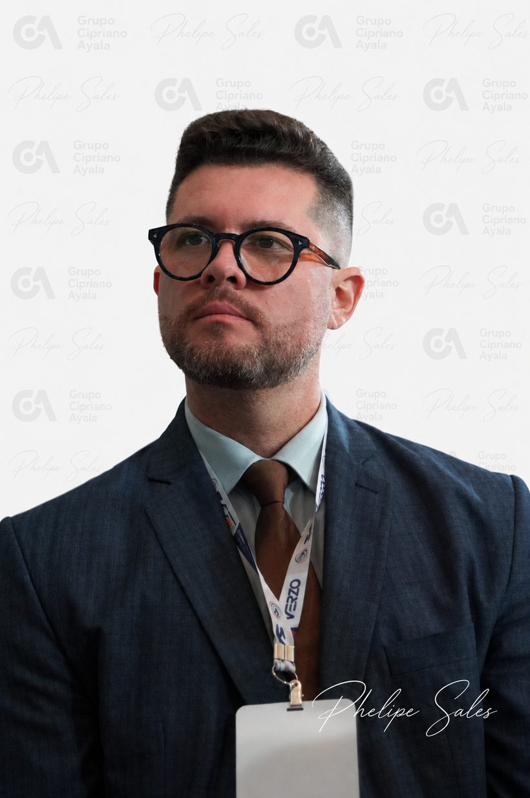

Brasília · Congresso Nacional
Captação combase em relacionamentogovernamental.
Há mais de 10 anos no terceiro setor, a Otimistas leva Santas Casas, hospitais filantrópicos, OSCs e instituições culturais até quem decide os recursos, e acompanha cada pedido até o dinheiro chegar.
Recurso público passa por pessoas, prazos e regras. Nós cuidamos das três, para que a sua instituição cuide de gente.
Foco em autossustentabilidade para organizações do terceiro setor
Captação começa por relacionamento.
Emenda parlamentar, programa de ministério ou edital: colocamos a sua organização no lugar certo, na hora certa, com o pedido certo. Cada passo é registrado, e o cliente acompanha tudo em um painel próprio.
Diagnóstico
Entendemos a instituição, os projetos, a documentação e as fontes que combinam com ela.
Relacionamento
Mapeamos quem pode apoiar, abrimos portas e apresentamos a demanda aos gabinetes certos.
Pedido formalizado
Ofício, projeto e valores organizados, entregues dentro do prazo de cada janela.
Indicação e empenho
Acompanhamos a indicação, o cadastro da proposta e a resolução de pendências técnicas.
Recurso pago
Seguimos até o dinheiro entrar na conta da instituição e apoiamos a prestação de contas.
Onde as decisões acontecem, a Otimistas está presente.
Conhecemos os gabinetes, as comissões e o calendário do orçamento. A sua instituição chega a Brasília pela porta certa.
Orientação e acompanhamento em cada frente.
Não entregamos um plano e vamos embora. Ficamos ao lado da instituição do primeiro contato ao relatório para a diretoria.
Relações governamentais
Agenda com parlamentares e ministérios, articulação com bancadas e comissões, presença semanal no Congresso.
Emendas parlamentares
Individuais, de bancada e de comissão: ofícios, indicação, cadastro da proposta e acompanhamento até o pagamento.
Editais e chamamentos
Busca diária de oportunidades abertas a OSCs no Brasil todo e apoio na inscrição.
Leis de incentivo e fundos
Lei Rouanet, PRONON, PRONAS/PCD, incentivo ao esporte, fundos da infância e do idoso.
Sustentabilidade financeira
Planejamento para diversificar fontes e diminuir a dependência de um único recurso.
Elaboração de projetos
Projetos estruturados no formato que cada fonte pede, com metas, orçamento e documentação.
Articulação institucional
Pontes com prefeituras, governos estaduais, conselhos, institutos e fundações privadas.
Relatórios executivos
Prestação de contas mensal do que avançou: relacionamento, pedidos, sinalizações e recursos.
Mais de 50 estratégias de captação.
Nosso foco é a autossustentabilidade. Trabalhamos com várias fontes ao mesmo tempo e escolhemos, para cada organização, a combinação certa para o seu porte, a sua área e o seu momento.
Orçamento federal
- Emendas individuais
- Emendas de bancada
- Emendas de comissão
- Programas dos ministérios
- Propostas pelo TransfereGov
Leis de incentivo e fundos
- Lei Rouanet
- PRONON e PRONAS/PCD
- Lei de Incentivo ao Esporte
- Fundos da infância e do idoso
- Fundos estaduais e municipais
Editais e parcerias públicas
- Chamamentos públicos
- Termos de fomento e colaboração
- Editais estaduais e municipais
- Prêmios para OSCs
- Destinação de penas pecuniárias
Investimento privado
- Institutos e fundações
- Empresas e cooperativas
- Editais de investimento social
- Doação de pessoas físicas
- Parcerias de longo prazo
A melhor opção do mercado para organizações que querem captar com método, presença em Brasília e transparência em cada etapa.
Quero uma estratégiaPara quem trabalhamos.
Organizações que cuidam de gente e precisam de recursos para continuar e crescer.
- Santas Casas
- Hospitais filantrópicos
- Organizações da sociedade civil
- Projetos sociais
- Instituições de educação
- Organizações religiosas
- Cultura
- Esporte
Cada cliente acompanha a própria captação.
Clientes da Otimistas têm acesso a um painel com o andamento de cada pedido, do primeiro contato ao recurso pago.
- Quais parlamentares podem destinar recursos para a sua cidade e a sua área
- Calendário oficial de prazos das emendas e do orçamento
- Editais abertos que servem para a sua instituição
- Recursos empenhados e pagos, conferidos no Portal da Transparência

Quem está à frente
Phelipe Sales
Consultor em captação de recursos e relações governamentais, com mais de 10 anos de atuação no terceiro setor.
Trabalha com emendas parlamentares, fundos públicos, leis de incentivo e editais, e com a estruturação de projetos e de planos de sustentabilidade financeira para organizações da sociedade civil, hospitais filantrópicos, instituições educacionais, religiosas e culturais.
A Otimistas nasceu para transformar relacionamento institucional em resultado concreto para quem transforma vidas.
Instituições que confiam na Otimistas.
Santas Casas, hospitais, fundações e organizações sociais em vários estados.
Vamos conversar sobre a sua instituição.
Conte o que a sua organização faz e onde quer chegar. Respondemos pelo WhatsApp.
Conversar no WhatsApp